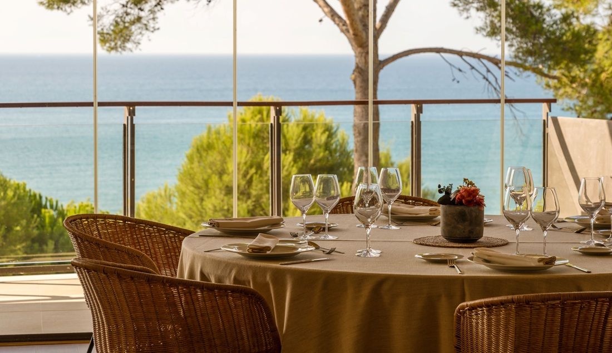
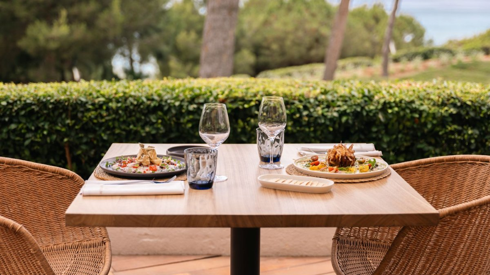
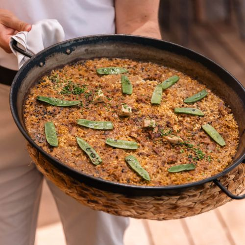
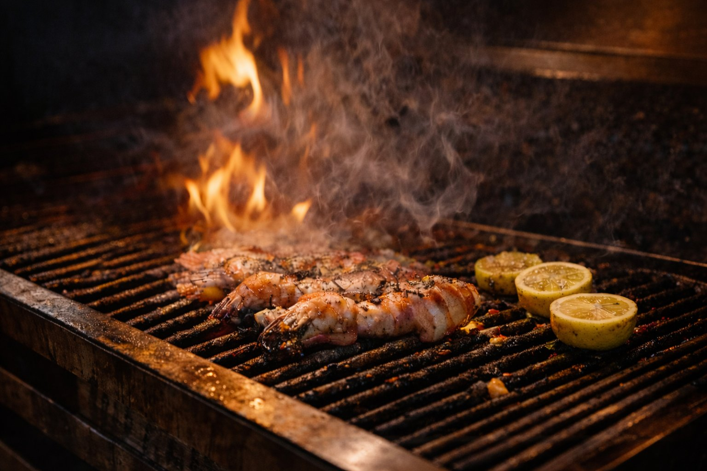

Infinitum Resort, Salou



DG
Sr. Diego García González
JV
Sr. Josep Vilaseca Rius "Suqui"
20:30 h
20:45 h
20:50 h
21:00 h
00:00 h

GM
Guillem Martínez Batiste
EP
Esteban Puga Claver
AR
Aroa Ruiz Ait
También te puede interesar
 Previa
Previa
Más crónicas de restaurante
Previa
La Goleta · Previa
La previa de nuestra visita a La Goleta de Salou. Cuarenta años de cocina marinera frente a la Platja dels Capellans.
Leer →
PreviaKema · Previa
La previa de nuestra primera visita de la temporada a Kema, Cambrils. Brasa, producto y coctelería con personalidad.
Leer →